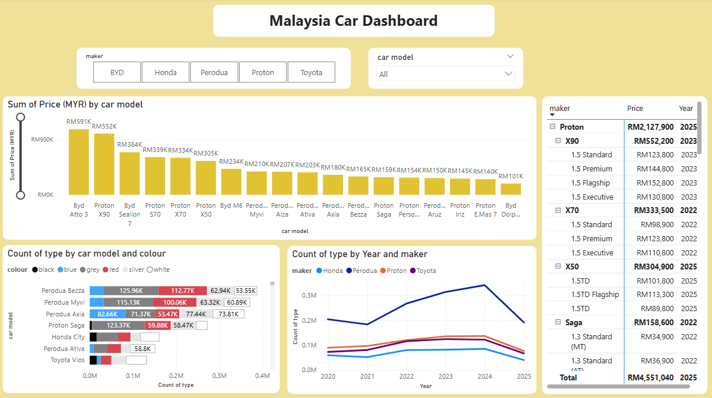

Car Registration in Malaysia
Project Overview
The Malaysia Car Market Dashboard is an interactive Power BI project designed to explore and analyze trends within the Malaysian automotive industry. The dashboard focuses on car pricing, model variation, colour preferences, and manufacturer performance, offering a comprehensive view of how different brands compete in the local market. By transforming raw datasets into intuitive visualizations, this project aims to support data-driven insights and meaningful market interpretation.
Motivation and Problem Statement
Malaysia’s automotive market is highly competitive, with local and international manufacturers targeting different consumer segments. However, raw automotive data is often fragmented and difficult to interpret without proper analysis. This project was developed to address that challenge by consolidating data into a single dashboard that allows users to quickly compare car models, identify pricing strategies, and understand consumer preferences across time. The goal was to bridge the gap between raw data and actionable insight.
Data Sources and Data Collection
The dataset used in this project was sourced from two complementary channels. The first source was data.gov.my, which provided reliable and structured open data related to vehicles and manufacturers in Malaysia. The second source involved car price data scraped using ChatGPT-assisted techniques, allowing the inclusion of up-to-date market pricing information. By combining official government data with scraped market data, the project reflects a realistic data engineering scenario commonly encountered in real-world analytics.
Data Cleaning and Preparation
Before visualization, the data underwent a thorough cleaning and preparation process. Inconsistent naming conventions, missing values, and duplicate records were identified and resolved. Car models were standardized across manufacturers, prices were normalized into Malaysian Ringgit (MYR), and categorical variables such as colour and car type were carefully grouped to ensure accurate analysis. This step was crucial in maintaining data integrity and ensuring that insights derived from the dashboard were reliable.
Dashboard Design and Interactivity
The dashboard was designed with usability and clarity in mind. Interactive slicers allow users to filter the data by car maker and model, enabling focused analysis without overwhelming the viewer. Each visualization was selected intentionally: bar charts for price comparison, stacked bars for colour distribution, line charts for trend analysis, and tables for detailed reference. Together, these visuals create a cohesive analytical flow that encourages exploration while maintaining clarity.
Pricing Analysis by Car Model
The price comparison chart reveals significant differences in pricing strategies across manufacturers. Higher-priced models such as Proton X90 and BYD Atto 3 stand out, indicating a focus on premium or technologically advanced segments. In contrast, models from Perodua consistently occupy lower price ranges, reinforcing their market position as affordable and accessible vehicles. This contrast highlights how manufacturers differentiate themselves through pricing to target distinct consumer groups.
Consumer Preferences Through Colour Analysis
The colour distribution analysis provides insight into consumer behaviour and aesthetic preferences. Neutral colours such as grey, silver, and white dominate across most popular models, suggesting that Malaysian consumers prioritize practicality, maintenance ease, and resale value. Brighter colours appear less frequently, indicating that while customization exists, conservative colour choices remain the norm in the mass market.
Market Trends by Year and Manufacturer
Trend analysis by year reveals shifts in car availability and popularity across manufacturers. Proton and Perodua show consistent growth over time, reflecting strong domestic demand and brand loyalty. Meanwhile, fluctuations among international brands suggest sensitivity to economic conditions, policy changes, or evolving consumer preferences. These trends provide valuable context for understanding how the Malaysian car market evolves over time.
Key Insights and Business Implications
Several insights emerge from this analysis. Local manufacturers dominate volume-driven segments, while higher-priced models contribute disproportionately to total market value. Colour preference patterns reveal conservative consumer behaviour, and year-based trends highlight the resilience of domestic brands. These insights can inform pricing strategies, inventory planning, and marketing decisions for automotive stakeholders.
Tools, Skills, and Technologies Used
This project demonstrates proficiency in Power BI for dashboard design, data modeling, and interactive visualization. It also reflects skills in data cleaning, integration of multiple data sources, and analytical reasoning. The use of ChatGPT-assisted scraping showcases adaptability in leveraging AI tools for data collection, while the overall project emphasizes data storytelling and insight communication.
Conclusion
The Malaysia Car Market Dashboard is a strong example of how data analytics can transform raw information into meaningful insights. By combining official data, scraped market prices, and thoughtful visualization design, this project delivers a comprehensive and engaging analysis of Malaysia’s automotive landscape. It serves as a practical portfolio piece that reflects both technical competency and real-world analytical thinking.